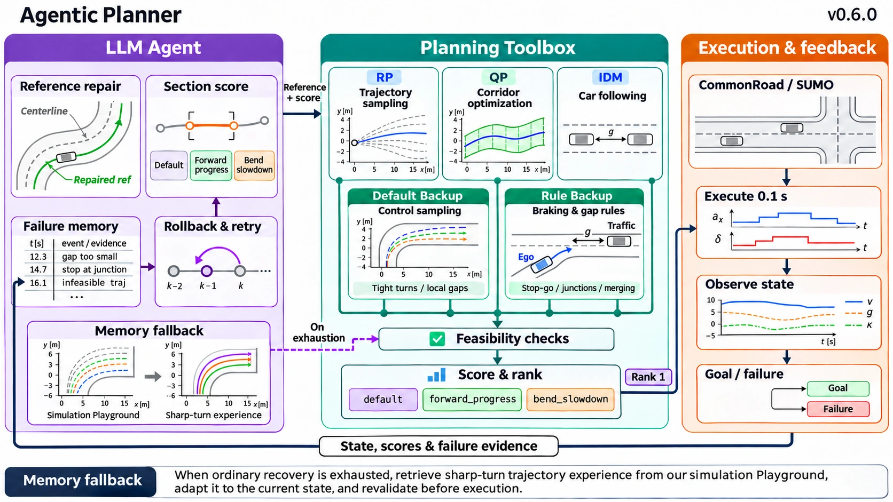

Method at a glance
How it works
- 01Observe and reasonRead the current road, vehicle, goal, and traffic evidence; choose an algorithm and bounded strategy.
- 02Plan and rankNative planners generate trajectories; the configured objective selects a candidate.
- 03Forecast and checkComplete the selected forecast to three seconds, compare time-aligned traffic occupancy, and retain physical execution checks.
- 04Execute and return evidenceAdvance one 0.1-second simulation step, observe reactive traffic, and interrupt delegation when new evidence requires reasoning.
Project workflow schematic.
The problem: reasoning that survives execution
This is part of my student research assistant work at TUM’s Chair of Cyber-Physical Systems, starting in October 2026, under Youran Wang and Prof. Matthias Althoff. The current agent uses GPT-6.1; archived release-specific studies below include earlier model and configuration choices.
A driving agent has to reconcile route progress, interaction with other vehicles, feasible vehicle dynamics, and a goal with spatial and temporal constraints. A plausible verbal plan is only one part of that problem: it must produce an executable next motion and respond when the traffic changes.
This project investigates a hierarchy in which a language agent chooses strategies and interprets difficult interactions, while numerical planners and native validation handle trajectories and physical execution. The experiments use CommonRoad tasks with live SUMO traffic, so surrounding vehicles evolve in response to the simulation rather than simply following a hidden prerecorded future.
My contribution
- Built the agent–environment integration: persistent sessions, structured MCP tools, planning feedback, reference-path interfaces, and explicit action/state receipts.
- Developed the decision contracts between high-level reasoning, planner choice, traffic-policy labels, candidate ranking, forward prediction, and bounded automatic execution.
- Implemented versioned experimental orchestration, immutable source/input manifests, per-attempt records, independent execution audits, and fresh-initial-state retests after repairs.
- Built replay and diagnosis tooling that ties visible vehicle motion to candidate scores, selected trajectories, warnings, strategy changes, and recorded outcomes.
- Alongside the planner, developing a Transformer with a logistic-hazard decoder to predict time to traffic-rule violations, with multi-seed validation and feature ablations.
Architecture and control boundaries
The language model operates through a constrained tool interface. It can select available planning algorithms, adjust permitted objective or sampling parameters, reason about route/reference choices, and manage interaction policies. It does not directly invent steering commands or advance an unchecked trajectory.
The backend combines reactive planning with rule-based or sampled continuation candidates. It regenerates and validates motion using the current measured state. Candidate generation, ranking, forecasting, and execution are distinct stages, which makes it possible to locate a failure in the appropriate component instead of attributing every problem to the agent prompt.
In the selected-forecast development revision, the configured original objective ranks candidates first. Only the selected trajectory retains its complete native prefix and receives any missing tail needed for a three-second ego forecast. That forecast is compared with traffic occupancy in matching time intervals; constructing an extra long rollout for every candidate is not used as a substitute ranking rule.
Causal prediction and bounded delegation
SPOT/SONIA supplies set-based traffic predictions from current measured actors and the public map. The system distinguishes observed positions, possible future occupancy, and checked motion prefixes. Missing forecast coverage is reported explicitly, with actors still represented by their observed identity and state.
A vehicle's wait label describes a traffic-policy relationship; it is separate from the ego vehicle's actual decision to slow, roll, stop, or approach a conflict area. Physical timing and trajectory checks still determine which movement can execute. These distinctions are important in merging, ordinary car following, and crossing traffic.
The agent can delegate a bounded interval of automatic execution, but the world is rechecked at each 0.1-second step. New hazards, stale state tokens, tracking problems, or the absence of a checked continuation return control with structured evidence. The forward-only studies disable physical rollback and replay, so an unfavorable state cannot be erased during a scored episode.
Data, experiments, and results
The task data consists of road networks, vehicle initial states, reactive traffic, and CommonRoad planning goals. It is an evaluation environment rather than a dataset used to train a new end-to-end driving network. Each campaign records the source version, inputs, model configuration, budget, and every attempt.
Two completed evaluation snapshots illustrate the work's scale and the importance of release-specific reporting. The later campaign used a different language-agent/configuration and several separately frozen repair revisions.
- Strict success requires the native goal and validity checks, successful termination, and the independent execution/forecast audit—not merely visual progress toward the target.
- Planning noncompletion, actual contact, infrastructure faults, and numerical trajectory cost are recorded separately. Results from different releases are not pooled into a best-case success rate.
- The simulator pauses during language-model decisions. These studies evaluate closed-loop behavior and tooling, rather than demonstrating real-time on-road response latency.
| Evaluation snapshot | Strict task successes | Protocol |
|---|---|---|
| Frozen v0.7.0 study | 96 / 100 | Fresh initial states; zero rollback/replay; zero recorded actual contacts |
| v0.7.14 repair campaign | 78 / 100 | 100 fresh scenarios; fix.1–fix.4 tracked separately; four fault attempts retained and repaired/retested |
Presentation: adaptive planning and failure memory
My project presentation illustrates how the agent adapts its planning tools and reference path when a default continuation fails. Its v0.6.0 architecture includes a section-scoring strategy, several numerical planning options, fallback trajectories and a failure-memory path for difficult road geometry.
The presentation reports 143/143 scenes passed and includes the Augsburg-13_1 and Jena-14_4 replays below. This is a historical presentation snapshot: its architecture permits rollback and retry, which are visible in the replay annotations. The later forward-only 100-scenario campaigns above use their own protocols and results.


Current research and engineering focus
Development continues on traffic-policy reasoning, forecast completeness, timing-aware interaction, planner recovery from the current state, and reliable model/tool transport. The published selected-forecast engineering revision has its own component and tool-loading validation; it does not inherit a full-suite result from an older release.
The central capability developed here is connecting an uncertain reasoning system to a stateful physical simulator through explicit contracts, useful feedback, and reproducible experiments. Native CommonRoad, SUMO, planner, and SPOT/SONIA components remain credited foundations; my work is the agentic integration and the execution/evaluation machinery around them.
Related work: neural traffic-rule prediction
My HiWi work also includes predicting when a traffic-rule violation may occur. A Transformer processes grouped histories of vehicle dynamics and logical robustness features, together with a road-network representation; a logistic-hazard decoder estimates the event-time distribution rather than only a yes/no label.
I am responsible for neural-network architecture design, testing and model comparison, as well as hyperparameter search. The work includes comparisons of MLP, GRU and Transformer encoders with several event-time decoders, orthogonal-array screening and Optuna TPE refinement. Multi-seed validation and feature ablations support the comparisons.
Read the neural rule-prediction projectProject visuals


Original documents
Project reports, theses and retained presentations in their original language. Presentations are provided as static PDF exports; personal identifiers are removed where necessary.
Related resources
- CommonRoadPlanning scenarios, trajectory validity, and evaluation foundations.
- Eclipse SUMOInteractive traffic simulation.
Based on the project's frozen campaign reports, release manifests, execution contracts, and replay artifacts. Ongoing development; performance numbers are tied to their stated versions and protocols. The three-slide Agentic Planner presentation supplies the separately labeled v0.6.0 architecture and two embedded replays; its presentation-reported 143-scene result is not pooled with later campaigns.